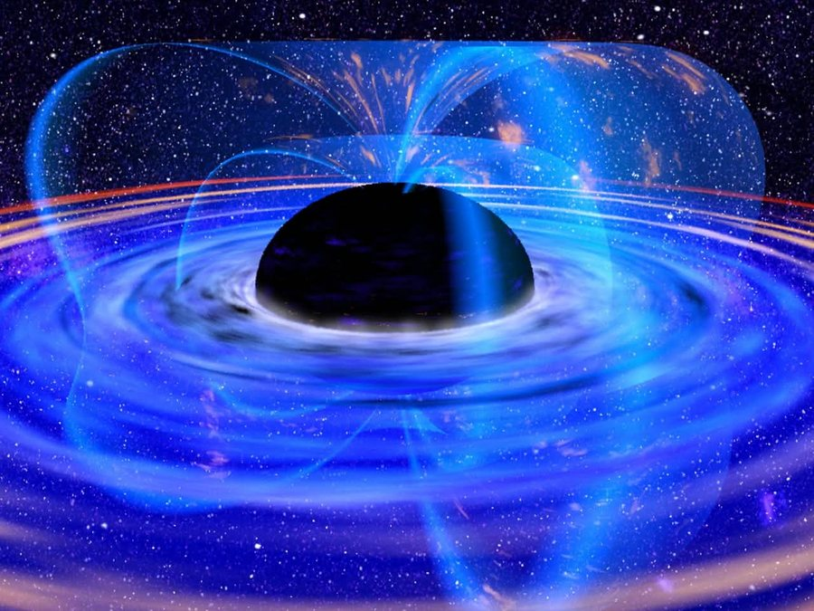
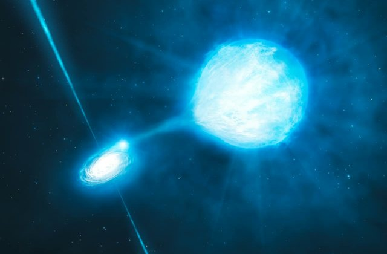
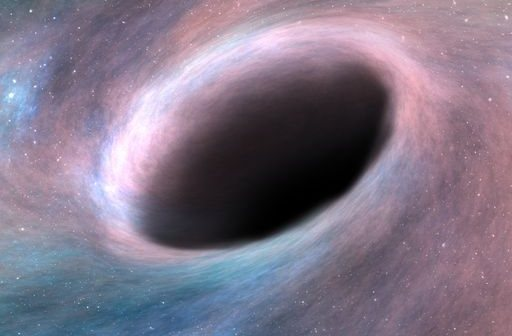
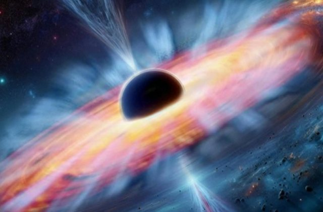

The Origins of Black Holes
Black holes can form in different ways — from the explosive deaths of massive stars, from the collapse of dense stars, or through the merger of other black holes.
From Star to Black Hole
- A massive star burns fuel, and the pressure balances gravity.
- The fuel runs out, and the core collapses (NASA, 2026).
- If enough mass is squeezed into a small space, an event horizon forms.
Types of Black Holes



| Kind | Rough mass | Example | Evidence strength |
|---|---|---|---|
| Stellar | A few to tens of Suns | Cygnus X-1 | ★★★★★ |
| Intermediate | Hundreds to thousands of Suns | A few candidates | ★★ |
| Supermassive | Millions to billions of Suns | Sagittarius A*, M87* | ★★★★★ |
Evidence ratings are own judgement, not an official measure.
Quick Questions
Can light escape a black hole?
No. Once light crosses the event horizon, it cannot get back out.
Will the Sun become a black hole?
No. The Sun does not have enough mass to collapse into one.
Do black holes pull everything in?
No. From far away, a black hole's gravity is like that of any object with the same mass. Only things that get too close are trapped.